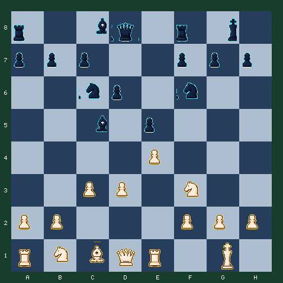

7月24日 · 早报 · 局面棋
五步救活全场最差的马
没有直接战术时，不要乱找将军；找到最差的棋子，为它规划一条通往前哨的路线。
难度 3/5 · 预计 8 分钟 · 5 次关键选择 · 主题：改善最差棋子与建立前哨
故事引入
局面平静时，很多棋手会随手推一个边兵，因为至少看起来做了什么。更可靠的问题是：我哪枚棋子最差，它怎样才能真正参加战斗？
白方 b1 的马仍在原位，其他棋子已经开始工作。你的五步计划是为它找到路线，让它最终站到 f5，并用中心兵巩固成果。
最差棋子原则
卡帕布兰卡等位置型大师常把复杂计划压缩成一个简单动作：改善全场最差的棋子。这个原则不会直接给出唯一答案，却能在没有战术时稳定地产生候选着。
今日局面
白方走五步，把最差的马送到前哨并巩固中心。

行棋方：白方 · FEN：r1bq1rk1/ppp2ppp/2np1n2/2b1p3/4P3/2PP1N2/PP3PPP/RNBQR1K1 w - - 0 8
今日问题
为 b1 的马规划五步路线
沿 d2、f1、g3、f5 改善白马，最后用 d4 加固中心。每一步都要服务于同一计划。
答案与逐步讲解
第 1 步：b1d2 · 对手回应 a7a6
第一步正确：Nbd2 让马离开后排，并保留去 f1、f5 的路线。
第 2 步：d2f1 · 对手回应 b7b5
第二步正确：Nf1 看似后退，实际是在转向 g3。位置棋允许为了更好路线暂时远离中心。
第 3 步：f1g3 · 对手回应 c8e6
第三步正确：Ng3 开始瞄准 f5 和 h5，马已经从旁观者变成潜在进攻子。
第 4 步：g3f5 · 对手回应 d8d7
第四步正确：Nf5 占据前哨，直接靠近黑王，并让黑方很难用兵驱赶。
第 5 步：d3d4
第五步正确：d4 加固中心并限制黑方 e5 兵，让 f5 的马拥有更稳定的支点。
完成总结
五步完成。白马从 b1 绕到 f5，最后用 d4 稳住中心。没有任何一步直接赢子，但全队协调与进攻潜力明显提高。
常见错误
如果走 b1c3
Nc3 是自然发展，但 c3 已被白兵占据，而且本局马的理想路线是 d2-f1-g3-f5。
如果走 h2h3
h3 是有用的等待着，却没有改善全场最差的 b1 马。没有战术时，优先解决最差棋子。
复盘：先看终点，再评价路线
- Nbd2 让马离开初始格，并建立转移路线。
- Nf1-g3 是典型的重组：单步看似慢，组合起来目标明确。
- Nf5 抵达难被兵驱赶的前哨。
- d4 用中心控制巩固马的成果，计划从棋子改善扩展到全局协调。
带走一句：
没有直接战术时，找到最差的棋子，为它设计两到三站的路线，而不是随手走一个看起来有用的兵步。
常见疑问
Q：为什么马还要先后退？
A：Nf1 是路线中的转弯，不是退缩。马从 f1 能去 g3，再进入 f5 前哨。
Q：什么叫前哨？
A：前哨是深入对方阵地、又难被敌兵驱赶的稳定格。f5 的马靠近黑王，并限制多枚黑子。
Q：为什么最后才走 d4？
A：马到 f5 后，d4 加强中心控制并限制 e5，让黑方更难通过中心反击赶走白马。
想亲自走一遍这盘棋？
点击下方链接进入互动版，可以点击或拖动走棋，每一步都有即时红绿反馈和教练讲解。
棋刻 Chess Moment · 每天三分钟，想明白一步棋